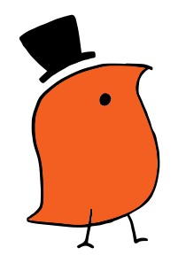

Melbourne University Linguistics Society
Who are we?
A group of (mostly) students from the University of Melbourne who are interested in the study of languages and linguistics.
What do we do?
We hold all kinds of events, from chill hangouts (with free food!) to trivia nights to study groups for students studying any linguistics subject.
What is that weird bird like thing?
It's a wug, created by psycholinguist Jean Berko Gleason . Ours is orange, and wears a top hat.